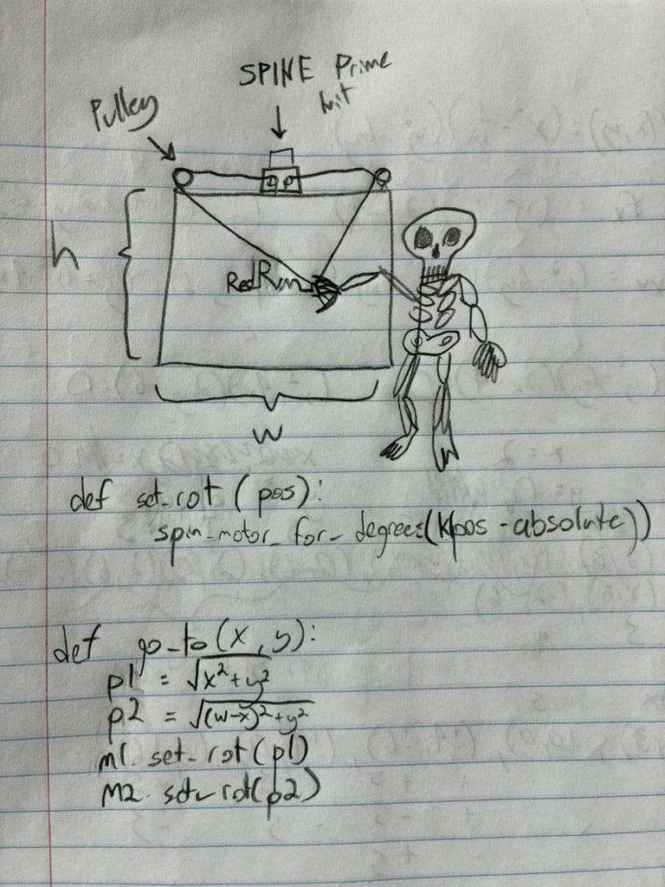
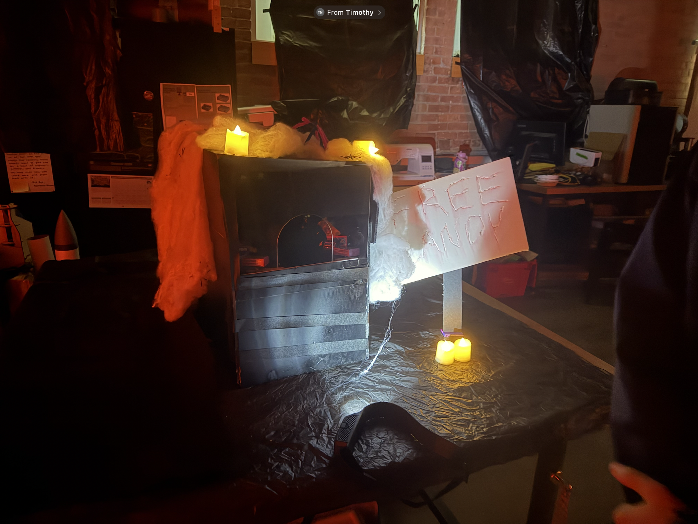
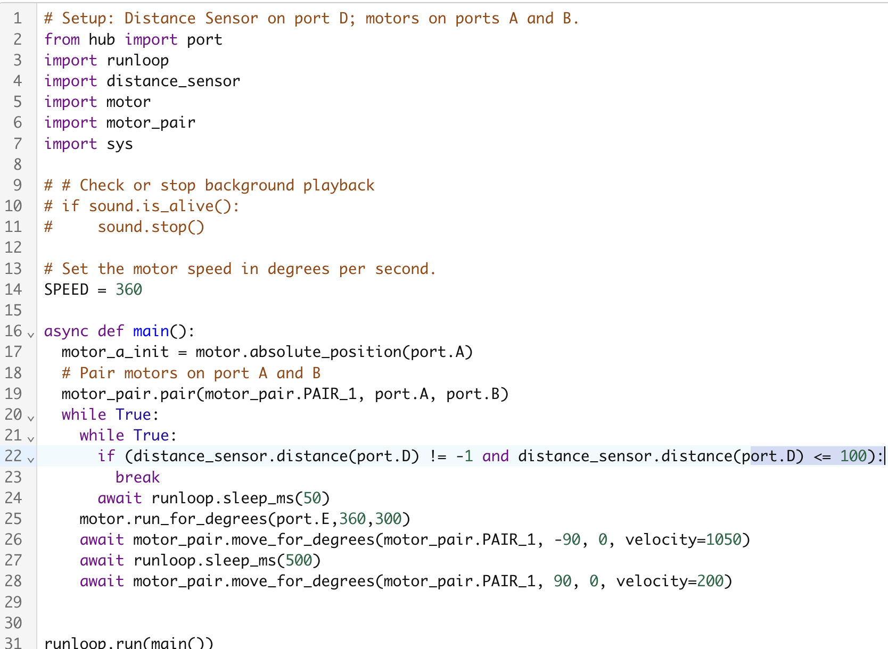

For this project, we were tasked with creating spooky mechanisms for a haunted house. My group (composed of myself, Timothy Ngo, and Parviz Sohibnazarov) iterated through many different ideas and designs until we eventually settled on something that worked.

Here, you can see the initial idea was completely different from what we landed on. Starting off, we thought we would make a skeleton that would write on a whiteboard like an insane person, using a system of pulleys to reach designated locations. However, we quickly discovered it would be a tricky challenge to try and accurately set the location of each pully since the string would slip. We decided to try other ideas for the sake of completing the project on time. We experimented with different ideas of luring someone to put their hand into a box to get some "free candy", but to be grabbed by a skeleton hand. We tried some different options using a scissor mechanism and a rotating arm with a flap that would open, but we found the simplest solution was to just mount the arm to the end of a couple motors and make the interior of the box so dark, you could not see it until it reached out.

The code for this project was exceptionally straightforward: we simply waited for the distance sensor to detect something within 100mm. When it did, the motors would run at full speed in a 90 degree arc, then reset.
